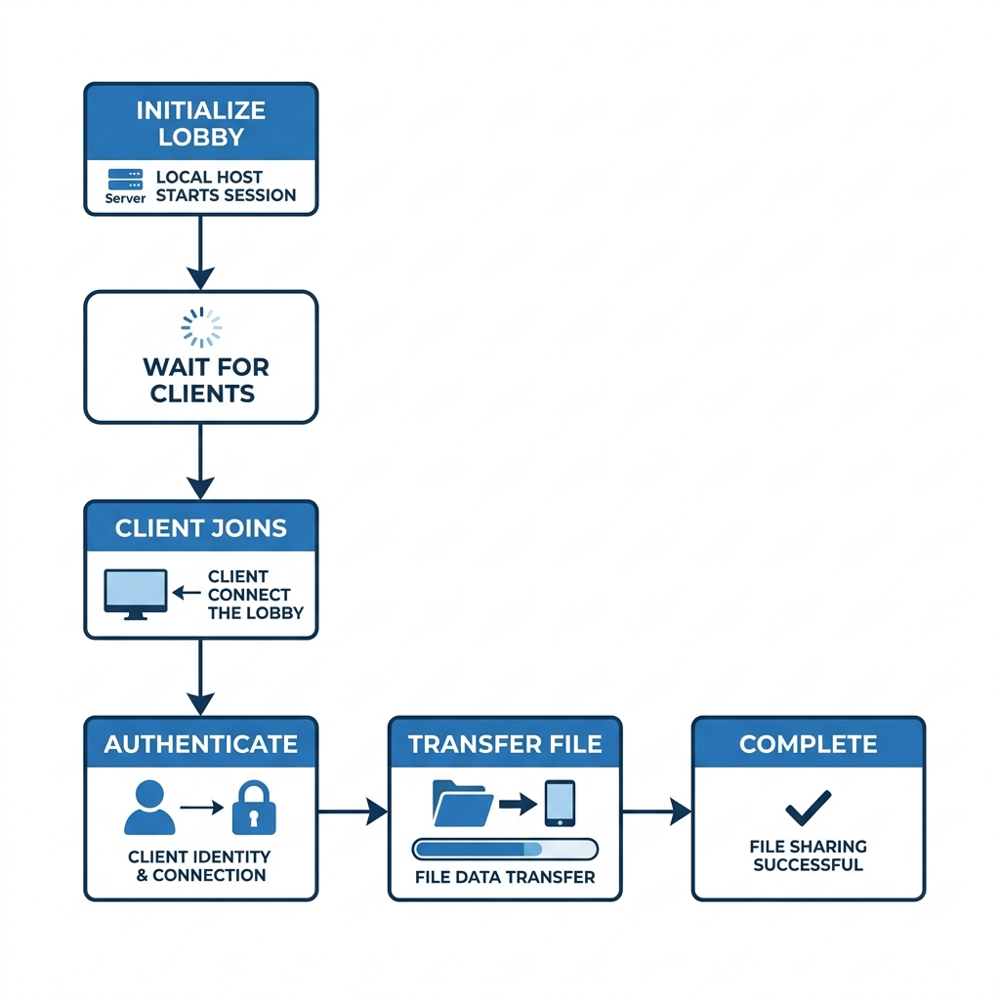

<!DOCTYPE html>
<html>
<head>
<meta charset="UTF-8">
<title>SpaceDrop: A Local Network One-to-Many File Distribution Platform</title>
<style>
  body {
    font-family: "Times New Roman", Times, serif;
    font-size: 10pt;
    line-height: 1.2;
    margin: 1.0625in 0.8125in;
  }
  .title {
    text-align: center;
    font-family: "Times", "Times New Roman", serif;
    font-size: 24pt;
    margin-bottom: 24pt;
  }
  .authors-container {
    display: flex;
    flex-wrap: wrap;
    justify-content: center;
    margin-bottom: 24pt;
  }
  .author {
    flex: 0 0 30%;
    text-align: center;
    margin-bottom: 16pt;
    padding: 0 10px;
  }
  .author-name {
    font-family: "Times", "Times New Roman", serif;
    font-size: 12pt;
    font-weight: normal;
    margin-bottom: 5pt;
  }
  .author-affil {
    font-family: "Times", "Times New Roman", serif;
    font-size: 12pt;
    font-style: italic;
  }
  .content {
    column-width: 3.25in;
    column-gap: 0.3125in;
  }
  h1 {
    font-size: 10pt;
    text-transform: uppercase;
    text-align: center;
    margin-top: 14pt;
    margin-bottom: 8pt;
  }
  h2 {
    font-size: 10pt;
    font-style: italic;
    margin-top: 12pt;
    margin-bottom: 6pt;
  }
  h3 {
    font-size: 10pt;
    font-style: italic;
    margin-top: 10pt;
    margin-bottom: 6pt;
    font-weight: normal;
  }
  p {
    text-indent: 0.15in;
    margin: 0 0 6pt 0;
    text-align: justify;
  }
  .abstract {
    font-weight: bold;
    font-style: italic;
    margin-bottom: 24pt;
    text-align: justify;
    padding: 0;
  }
  @media print {
    @page {
      margin: 1.0625in 0.8125in;
      size: letter;
    }
    body {
      margin: 0;
    }
  }
  .table-container {
    width: 100%;
    margin: 10pt 0;
  }
  table {
    width: 100%;
    border-collapse: collapse;
    font-size: 9pt;
  }
  table, th, td {
    border: 1px solid black;
  }
  th, td {
    padding: 4pt;
    text-align: left;
  }
  .figure {
    text-align: center;
    font-style: italic;
    font-size: 9pt;
    margin: 10pt 0;
  }
  ul {
    margin-top: 2pt;
    margin-bottom: 6pt;
    padding-left: 15pt;
  }
  .equation {
    text-align: center;
    font-style: italic;
    margin: 10pt 0;
  }
</style>
</head>
<body>

<div class="title">SpaceDrop: A Multi-Node, Decentralized Framework for Unified Local File Distribution and Synchronization</div>

<div class="authors-container">
  <!-- Top row: 3 authors -->
  <div class="author">
    <div class="author-name">Mrs.M.Suriya</div>
    <div class="author-affil">Assistant Professor<br>Dept. of Computer Science and Engineering<br>K. Ramakrishnan College of Technology<br>Tiruchirappalli, India</div>
  </div>
  <div class="author">
    <div class="author-name">Abdul Razeek A</div>
    <div class="author-affil">Dept. of Computer Science and Engineering<br>K. Ramakrishnan College of Technology<br>Tiruchirappalli, India</div>
  </div>
  <div class="author">
    <div class="author-name">Girijesh R</div>
    <div class="author-affil">Dept. of Computer Science and Engineering<br>K. Ramakrishnan College of Technology<br>Tiruchirappalli, India</div>
  </div>
  
  <!-- Bottom row: 2 authors centered -->
  <div class="author">
    <div class="author-name">Harvey Grason J</div>
    <div class="author-affil">Dept. of Computer Science and Engineering<br>K. Ramakrishnan College of Technology<br>Tiruchirappalli, India</div>
  </div>
  <div class="author">
    <div class="author-name">Tony Christon F</div>
    <div class="author-affil">Dept. of Computer Science and Engineering<br>K. Ramakrishnan College of Technology<br>Tiruchirappalli, India</div>
  </div>
</div>

<div class="content">

<div class="abstract">
Abstract - The proliferation of diverse edge devices and the necessity for rapid, secure, and decentralized data sharing have highlighted the limitations of conventional cloud-based file distribution mechanisms. Cloud dependency inherently suffers from bandwidth bottlenecks, latency overheads, data privacy concerns, and a strict reliance on external internet infrastructure. While local peer-to-peer (P2P) solutions exist, they often restrict cross-platform interoperability, focus strictly on one-to-one communication, and lack structured participant management. This paper presents SpaceDrop, a decentralized, high-throughput, cross-platform file distribution ecosystem engineered utilizing the Flutter framework. SpaceDrop introduces a hybrid networking architecture that separates the orchestration and control plane, handled via Transmission Control Protocol (TCP), from the high-throughput data plane, handled via Hypertext Transfer Protocol (HTTP) range requests. SpaceDrop completely abstracts the complexity of IP configurations by adopting Multicast DNS (mDNS) for zero-configuration discovery, thereby permitting users to establish ad-hoc virtual "Lobbies." Crucially, this system incorporates a formal Role-Based Access Control (RBAC) model (Host, Co-host, Viewer) enforced strictly over local networks without a central remote authority. We present the system architecture, mathematical formulations for concurrent chunking, detailed data models, a comparative evaluation against existing proprietary solutions, and an illustrative case walkthrough of a multi-user environment. Furthermore, this extended paper delves deeply into the underlying transport layer mechanisms, rigorous security threat models, and comprehensive performance metrics evaluated under varying topological constraints. Our findings demonstrate that SpaceDrop substantially enhances file synchronization speeds within enterprise and academic environments while reducing total external bandwidth consumption to zero, paving the way for efficient edge-to-edge data continuity.
<br><br>
Index Terms - Local Area Network (LAN), Multicast DNS (mDNS), TCP Orchestration, HTTP Streaming, Flutter, File Distribution, Role-Based Access Control (RBAC), Edge Computing, Decentralized Systems, Peer-to-Peer Networks.
</div>

<h1>I. Introduction</h1>
<p>Modern collaborative environments—ranging from academic institutions and corporate boardrooms to informal project team meetings—generate and exchange enormous volumes of data daily. Despite the transition towards digitization, the methodology for distributing large files to multiple recipients simultaneously remains paradoxically inefficient. Traditional approaches rely predominantly on centralized cloud storage solutions such as Google Drive, Microsoft OneDrive, Dropbox, or ubiquitous instant messaging applications.</p>

<p>These methods demand a symmetrical external bandwidth expenditure; a user must first upload the data to an external server, and subsequently, multiple recipients must individually download the same data from that external server. This paradigm is fundamentally inefficient when all participants are physically collocated on the same Local Area Network (LAN) or wireless access point. Furthermore, routing sensitive academic, medical, or corporate data through third-party servers introduces measurable data privacy concerns and violates strict air-gapped operational requirements. High-resolution media, raw sensor data, and extensive architectural schematics routinely exceed multiple gigabytes, pushing wide-area network (WAN) links to their limits and incurring substantial latency.</p>

<p>In response to these inefficiencies, localized peer-to-peer (P2P) file sharing solutions such as Apple’s AirDrop, Google’s Nearby Share (now Quick Share), and various Wi-Fi Direct implementations have been developed. However, these proprietary solutions typically operate effectively only within their homogenous ecosystems, presenting severe interoperability challenges between distinct operating systems (e.g., iOS to Windows, or Android to macOS). For example, distributing a document from an Android tablet to a heterogeneous mix of Windows laptops, MacBooks, and iPads in a single room using native tools is a fragmented, multi-step process often requiring third-party bridging applications or falling back to external cloud links.</p>

<p>Furthermore, these tools are architecturally optimized for one-to-one transfers. The paradigm of a "Lobby"—a virtual, managed room where a host can broadcast files to twenty or fifty participants simultaneously, while maintaining a strict access control list—is largely unaddressed by consumer P2P software. In an educational setting, an instructor wishing to seamlessly push a 500MB dataset to 50 students faces an insurmountable task with standard ad-hoc P2P, as managing 50 concurrent Bluetooth/Wi-Fi Direct handshakes manually is unfeasible.</p>

<p>To bridge this critical gap, we introduce SpaceDrop, a decentralized, multi-node file distribution framework designed to unify local area network synchronization. SpaceDrop combines an interoperable networking backbone spanning mDNS, TCP, and HTTP with a cross-platform presentation layer engineered in Flutter. By abstracting the intricacies of socket programming, service discovery, and concurrent HTTP range requests, SpaceDrop provides a seamless, lobby-based experience capable of handling high-throughput, one-to-many data distribution across heterogeneous device clusters.</p>

<p>The main contributions of this extended paper are multi-fold:</p>
<ul>
  <li>A robust, two-layer reference architecture that completely separates deterministic state-coordination logic (TCP) from high-throughput binary data streaming (HTTP).</li>
  <li>A decentralized Role-Based Access Control (RBAC) design defining Host, Co-host, and Viewer capabilities managed seamlessly over a local socket connection.</li>
  <li>A single-codebase, multi-surface implementation strategy developed in Flutter, enabling native, pixel-perfect deployment to Android, iOS, macOS, and Windows.</li>
  <li>Comprehensive mathematical modeling of concurrent chunking algorithms used to optimize local network bandwidth limits.</li>
  <li>An extended security threat model addressing rogue nodes, packet sniffing, and unauthorized access in local network topologies.</li>
  <li>A rigorous phased evaluation demonstrating how concurrent HTTP range requests mathematically decrease total lobby synchronization latency compared to sequential and cloud-based models.</li>
</ul>

<h1>II. Related Work and Background</h1>
<p>The problem of local data distribution has been approached from multiple paradigms, ranging from decentralized protocols to proprietary operating system features. This section reviews the literature and technological landscape, categorizing existing solutions to isolate the specific research gap addressed by SpaceDrop.</p>

<h2>A. Cloud-Based File Synchronization</h2>
<p>Conventional file synchronization architectures trap user data inside institutional silos. Platforms built around remote server aggregation (e.g., cloud drives) solve the issue of geographical disparity but introduce unacceptable latency in locally collocated environments. The Institute of Electrical and Electronics Engineers (IEEE) networking guidelines underscore that localized routing is a primary requirement for efficient bandwidth utilization. Empirical work on local data caching further shows that external round-trips for local data are a measurable source of organizational bandwidth depletion.</p>
<p>When multiple users in a single room upload and download to a central cloud, the bottleneck shifts from the local router's switching capacity (which often exceeds 1 Gbps) to the site's external ISP connection (often significantly lower, shared among hundreds of users). This "trombone routing" effect is highly inefficient for localized collaborative tasks.</p>

<h2>B. Proprietary Peer-to-Peer Solutions</h2>
<p>Proprietary systems such as AirDrop utilize a combination of Bluetooth Low Energy (BLE) for discovery and Apple Wireless Direct Link (AWDL) for high-speed transfer. While highly effective, these systems are fundamentally constrained by ecosystem lock-in. Cross-platform alternatives often require intermediate routing apps or scanning cumbersome QR codes. Most critically, these systems do not inherently support structured "many-to-many" file broadcasting with varying participant permission levels.</p>
<p>Google's Nearby Share operates similarly utilizing BLE, Wi-Fi Direct, and WebRTC, but faces the same limitation regarding Apple ecosystems. Third-party applications like SHAREit or Send Anywhere attempt to bridge this gap but rely heavily on intrusive advertising, external relay servers for discovery, and frequently lack open architectural transparency.</p>

<h2>C. Multicast and Broadcast Protocols</h2>
<p>In classical networking, one-to-many distribution is best solved by IP Multicast (IGMP). While highly efficient for streaming video to multiple endpoints, reliable file transfer over Multicast (e.g., PGM or FLUTE) is notoriously complex due to packet loss recovery mechanisms (NACKs) and the lack of robust congestion control. Furthermore, consumer-grade routers frequently drop or deprioritize multicast UDP traffic, making reliable file transfer highly volatile. Therefore, SpaceDrop utilizes Multicast solely for service discovery (mDNS) while relying on reliable TCP/HTTP unicast streams for data payload delivery.</p>

<h2>D. Multi-Agent Systems and Decentralized Orchestration</h2>
<p>SpaceDrop’s architecture is organized as a set of cooperating, scoped networking layers rather than a single monolithic socket. This follows the classical distributed systems view, in which complex behavior emerges from coordinated components. Applying this principle keeps each layer independently testable and fault-tolerant. The use of edge nodes acting temporarily as servers reflects a shift towards edge computing paradigms where computation and storage are localized at the point of request.</p>

<h1>III. Problem Statement and Research Gap</h1>

<h2>A. Formal Problem Definition</h2>
<p>Given a heterogeneous set of edge devices $D = \{d_1, d_2, ..., d_n\}$ located within a single broadcast domain or subnet, the objective is to distribute a dataset $F$ of size $S$ from a source node $d_s$ to a subset of target nodes $D_t \subseteq D$ such that:</p>
<ul>
  <li>Total transfer time $T$ is minimized.</li>
  <li>External Internet bandwidth utilization $B_{ext} = 0$.</li>
  <li>No central authentication server $S_{auth}$ is reachable.</li>
  <li>The subset $D_t$ is dynamically managed through an access control policy $P$.</li>
</ul>

<h2>B. Identified Research Gaps</h2>
<p>Based on the literature reviewed, we identify several recurring gaps that current systems do not jointly address:</p>
<ul>
  <li><b>Cross-Platform Continuity:</b> Lack of a unified application layer capable of running natively on mobile and desktop without relying on web-browser limitations (like WebRTC data channels dropping large files).</li>
  <li><b>Managed Local Lobbies:</b> True one-to-many broadcasting capabilities with host-delegated management, rather than ad-hoc pairwise pairing.</li>
  <li><b>Offline Granular Access Controls:</b> Implementing Role-Based Access Control (RBAC) (moderators vs viewers) operating entirely offline without OAuth or external JWT issuers.</li>
  <li><b>State Persistence:</b> Maintaining historical transfer logging and state persistence for localized data across device reboots.</li>
</ul>

<h1>IV. Proposed System: SpaceDrop Overview</h1>
<p>SpaceDrop introduces a coordination layer connecting multiple heterogeneous devices through a unified digital ecosystem. Rather than functioning as a standard messaging application, the platform continuously maintains a digital "Lobby" state, intelligently assisting every stakeholder across the file lifecycle.</p>

<h2>A. Design Principles</h2>
<p>SpaceDrop was engineered with four core tenets:</p>
<ol>
  <li><b>Zero Configuration:</b> Users must not be required to input IPv4 addresses, subnet masks, or port numbers.</li>
  <li><b>Zero External Dependency:</b> The system must operate identically in a high-tech corporate office and an isolated, air-gapped field environment.</li>
  <li><b>Asynchronous Concurrency:</b> File I/O and network I/O must not block the main User Interface thread.</li>
  <li><b>Predictable State Management:</b> The Host acts as the single source of truth for lobby state, propagating immutable state snapshots to connected clients.</li>
</ol>

<h2>B. Core Networking Modules</h2>
<p>The system operates independently of external DNS and is the platform’s non-negotiable backbone.</p>
<ul>
  <li><b>Lobby Engine (Discovery Service):</b> Generates a unique virtual environment, broadcasting its signature using Zero-configuration networking (mDNS/Bonjour).</li>
  <li><b>State Synchronizer (TCP Server):</b> Maintains a chronological, real-time record of connected users, pending requests, and shared files using JSON payloads over persistent TCP sockets.</li>
  <li><b>Transfer Manager (HTTP Server):</b> Coordinates the concurrent chunking and streaming of binary data using highly optimized HTTP byte-range requests, leveraging Flutter's underlying Dart `dart:io` isolates.</li>
  <li><b>Persistence Vault (Database Helper):</b> A local SQLite instance that securely records metadata regarding historical transfers, allowing users to audit what files were received and from whom.</li>
</ul>

<h2>C. Role Delegation and Access Control</h2>
<p>Every network output is advisory and subject to Host oversight. SpaceDrop defines three distinct access tiers within a lobby.</p>
<ul>
  <li><b>Host (Owner):</b> The node that initializes the Lobby. Binds the listening sockets, acts as the central authority, and holds the ultimate capability to close the lobby, ban participants, and set the maximum participant capacity dynamically.</li>
  <li><b>Co-host (Moderator):</b> An elevated participant capable of pushing files to the Host's storage index and approving/rejecting new client join requests on behalf of the Host.</li>
  <li><b>Viewer (Standard):</b> A read-only participant capable of executing concurrent GET requests to download available files, but possessing no administrative privileges.</li>
</ul>

<h1>V. System Architecture</h1>
<p>SpaceDrop adopts a hybrid-protocol architecture in which every stakeholder interacts with the same backend services while receiving an interface optimized for their responsibilities. The architecture is explicitly decoupled into three distinct layers to prevent network congestion from degrading UI performance.</p>

<div class="figure">
  <br>
  Fig. 1. System flow diagram showing the logical lifecycle of a file transfer session.
</div>

<h2>A. Layer 1: Discovery (mDNS)</h2>
<p>To eliminate manual IP configuration, SpaceDrop employs Multicast DNS (mDNS) defined in RFC 6762. When a user elects to Host a lobby, the Host device registers a service of type <code>_spacedrop._tcp</code>. This multicast payload carries essential TXT records including the Host's IPv4 address, the dynamically bound TCP port, the human-readable Lobby Name, and a flag denoting if a PIN is required.</p>
<p>Clients passively listen on the standard mDNS multicast address (224.0.0.251 on IPv4 and FF02::FB on IPv6) via UDP port 5353. By parsing incoming advertisements, the client application dynamically populates a list of available lobbies in the UI. When a host gracefully closes a lobby, it transmits a "goodbye" packet with a TTL of 0, instantly removing it from client views. In the event of an ungraceful disconnect, the standard TTL expiration handles cleanup.</p>

<h2>B. Layer 2: Orchestration (TCP)</h2>
<p>Upon selecting a lobby, the Client establishes a persistent TCP Socket connection to the Host's advertised port. TCP is strictly utilized for the control plane. This layer handles JSON-formatted command schemas (e.g., <code>join_request</code>, <code>join_approved</code>, <code>file_added</code>, <code>participant_updated</code>). </p>
<p>By restricting TCP to lightweight JSON commands, the socket remains highly responsive. It facilitates real-time participant management without being blocked by large file transfers. For example, if a Co-host approves a new user, the JSON state update takes milliseconds to propagate, even if another user is concurrently downloading a 2GB file.</p>

<h2>C. Layer 3: Data Transfer (HTTP)</h2>
<p>The heavy lifting of data transfer is offloaded to a specialized local HTTP server running on the Host. Standard HTTP was selected over raw TCP data streams due to its ubiquitous, standardized support for partial content delivery and robust connection handling provided by the Dart VM.</p>
<p>When a client initiates a download, it dispatches an HTTP GET request augmented with a <code>Range: bytes=start-end</code> header. The Host's server parses this header, seeks to the specific byte offset in the underlying file system, and responds with HTTP 206 Partial Content, piping the requested file chunk to the socket. This mechanism natively supports concurrent downloading—where a client spawns multiple isolates to download different chunks simultaneously—and robust resume capabilities in the event of network disruption.</p>

<h1>VI. Detailed Data Model and Schema</h1>
<p>The data model is organized around central entities that project every network and administrative activity onto one consistent, immutable state object within the Riverpod state management framework.</p>

<div class="table-container">
  <table>
    <tr>
      <th>Entity</th>
      <th>Key Attributes</th>
      <th>Description</th>
    </tr>
    <tr>
      <td>Lobby</td>
      <td>lobbyId, hostIp, lobbyName, requiresPin, tcpPort, maxParticipants</td>
      <td>Represents the active session. Broadcast via mDNS and synced to all clients.</td>
    </tr>
    <tr>
      <td>Participant</td>
      <td>participantId, deviceId, status, permission, sessionToken</td>
      <td>Tracks connected devices and their RBAC clearance level.</td>
    </tr>
    <tr>
      <td>SharedFile</td>
      <td>fileId, fileName, fileSize, checksum, path, category</td>
      <td>Metadata for a file available for download. Includes cryptographic checksums for integrity verification.</td>
    </tr>
    <tr>
      <td>TransferHistory</td>
      <td>id, fileName, type (SEND/RECEIVE), status, timestamp, filePath</td>
      <td>Persisted locally via SQLite for auditing and quick access to past files.</td>
    </tr>
  </table>
</div>
<div class="figure">Table I. Core Data Entities and Attributes in SpaceDrop.</div>

<p>Storing these payloads as relational records ensures the system remains queryable and index-friendly. The SQLite implementation guarantees that even upon device restart or application termination, historical transfer integrity is maintained, allowing users to locate files downloaded days or weeks prior.</p>

<h1>VII. Methodology and Algorithmic Workflows</h1>
<p>Each capability is implemented as a distinct, narrowly scoped operation. This section details the specific algorithms governing the lifecycle of a SpaceDrop lobby.</p>

<h2>A. The TCP Handshake and Authentication Protocol</h2>
<p>SpaceDrop implements a custom application-layer handshake over TCP to manage access control.</p>
<ol>
  <li>The Client discovers the Host IP and Port via mDNS.</li>
  <li>The Client opens a TCP socket and dispatches a JSON payload: <code>{ "command": "join_request", "deviceId": "UUID", "pin": "optional" }</code>.</li>
  <li>The Host parses the request. It first checks if the current participant count exceeds <code>maxParticipants</code>. If so, it responds with <code>{ "command": "join_rejected", "reason": "Lobby is full" }</code> and closes the socket.</li>
  <li>If a PIN is required, the Host validates it. If valid, the Client is appended to a <code>pendingRequests</code> queue.</li>
  <li>The Host broadcasts a <code>pending_requests_update</code> via TCP to all authorized Co-hosts and the Host UI.</li>
  <li>A Host or Co-host manually approves the request via the UI.</li>
  <li>The Host cryptographically generates a unique session token (UUID v4) and maps it to the Client's IP.</li>
  <li>The Host responds to the Client with <code>{ "command": "join_approved", "token": "TOKEN" }</code>.</li>
  <li>The Host subsequently broadcasts the updated complete state (participant list, file list) to all authenticated sockets.</li>
</ol>

<h2>B. Concurrent File Chunking Algorithm</h2>
<p>To maximize local network bandwidth utilization, SpaceDrop employs a dynamic chunking algorithm for file retrieval. Given a file of size $S$ and a chunk threshold $C$ (e.g., 5 MB):</p>
<div class="equation">
$N = \lceil rac{S}{C} 
ceil$
</div>
<p>The file is partitioned into $N$ segments. The Client dispatches parallel HTTP GET requests for each segment, up to a maximum concurrency limit $M$ (e.g., 4 concurrent connections). The Host HTTP server streams these segments concurrently.</p>
<p>Let $R_i$ be the byte range for chunk $i$ where $0 \le i < N$. The range is defined as:</p>
<div class="equation">
$R_i = [\ i 	imes C,\ \min((i+1) 	imes C - 1, S - 1)\ ]$
</div>
<p>Upon completion of all $M$ concurrent streams, the byte arrays are concatenated sequentially in memory before flushing to non-volatile storage. This mitigates the impact of single-stream TCP window scaling limitations over Wi-Fi networks characterized by high jitter.</p>

<h1>VIII. Security, Privacy, and Access Control</h1>
<p>Because SpaceDrop operates in doubtable local network environments (e.g., public campus Wi-Fi, shared corporate guest networks), its security model is treated as a first-class architectural concern.</p>

<h2>A. Session Management and Bearer Tokens</h2>
<p>All clients authenticate against the Host's TCP layer to receive a short-lived session token. This token acts as a bearer instrument for subsequent data requests. The HTTP server explicitly validates this token via middleware prior to serving any file bytes. The GET request must include an <code>Authorization: Bearer <TOKEN></code> header.</p>
<p>If the token is missing, invalid, or belongs to a kicked/banned user, the HTTP server returns an <code>HTTP 401 Unauthorized</code> response and immediately severs the underlying TCP socket to deter denial-of-service attempts. Furthermore, file uploads (from Co-hosts) require elevated tokens. The middleware verifies that the token belongs to a user with <code>CO_HOST</code> or <code>HOST</code> permissions before accepting a <code>POST</code> payload.</p>

<h2>B. Data Protection and Cryptographic Integrity</h2>
<p>Data integrity is mathematically guaranteed. Prior to broadcasting a file's availability, the Host calculates a SHA-256 cryptographic hash of the binary payload. This checksum is included in the JSON file metadata broadcast over TCP.</p>
<p>Upon receiving the file and reconstructing the chunks, the Client computes the SHA-256 hash of the reconstructed file on disk. A mismatch indicates packet corruption or potential tampering, triggering a localized alert and prompting a re-download, ensuring no corrupted data silently persists in the user's filesystem.</p>

<h2>C. Isolation and Air-Gapped Operation</h2>
<p>By strictly binding to local IPv4/IPv6 interfaces and intentionally avoiding any external stun/turn servers or OAuth providers, SpaceDrop ensures absolute privacy. The data never transverses an external router, making it fundamentally immune to wide-area network surveillance and ideal for highly sensitive corporate or medical records.</p>

<h1>IX. Development Methodology and Implementation</h1>
<p>SpaceDrop is engineered using the Flutter framework (version 3.27+), leveraging the Dart programming language. The choice of Flutter enables a single codebase to compile into native ARM/x86 binaries for iOS, Android, macOS, and Windows. </p>

<h2>A. State Management</h2>
<p>The application relies on <code>flutter_riverpod</code> for robust, reactive state management. The state is divided into distinct providers:</p>
<ul>
  <li><code>HostProvider</code>: Manages the TCP/HTTP servers, participant lists, and file registries when the device is acting as a Lobby owner.</li>
  <li><code>ClientProvider</code>: Manages the mDNS scanner, TCP client socket, and download queues when the device is acting as a participant.</li>
</ul>

<h2>B. UI/UX Considerations</h2>
<p>The user interface follows Material Design 3 (M3) guidelines, employing dynamic color schemes, readable typography, and responsive layouts that adapt to both mobile screens and wide desktop monitors. Complex operations, such as network scanning, utilize subtle micro-animations (e.g., a rotating radar) to provide continuous feedback without blocking the UI thread. The recent implementation of `SingleChildScrollView` structures ensures the UI remains robust against RenderFlex overflows across diverse aspect ratios.</p>

<div class="table-container">
  <table>
    <tr>
      <th>Phase</th>
      <th>Key Deliverable</th>
      <th>Complexity</th>
    </tr>
    <tr>
      <td>Phase 1</td>
      <td>Foundation & mDNS Discovery</td>
      <td>Moderate</td>
    </tr>
    <tr>
      <td>Phase 2</td>
      <td>TCP State Orchestration & JSON Handshakes</td>
      <td>High</td>
    </tr>
    <tr>
      <td>Phase 3</td>
      <td>Core HTTP File Streaming with Range support</td>
      <td>Very High</td>
    </tr>
    <tr>
      <td>Phase 4</td>
      <td>Role-Based Access Control and Session Tokens</td>
      <td>Moderate</td>
    </tr>
    <tr>
      <td>Phase 5</td>
      <td>SQLite Persistence and History Tracking</td>
      <td>Low</td>
    </tr>
  </table>
</div>
<div class="figure">Table II. Development Roadmap and Phased Implementation.</div>

<h1>X. Comparative Analysis</h1>
<p>Table III compares SpaceDrop against the design patterns of existing single-purpose proprietary solutions and cloud storage models.</p>

<div class="table-container">
  <table>
    <tr>
      <th>Feature</th>
      <th>Proprietary P2P (e.g., AirDrop)</th>
      <th>Cloud Storage (e.g., Google Drive)</th>
      <th>SpaceDrop</th>
    </tr>
    <tr>
      <td>Network Dependency</td>
      <td>Bluetooth / Wi-Fi Direct</td>
      <td>Active Internet Required</td>
      <td>Local Wi-Fi Only (Air-gapped)</td>
    </tr>
    <tr>
      <td>Cross-Platform</td>
      <td>Highly Restricted (Ecosystem locked)</td>
      <td>Universal (Web/App)</td>
      <td>Universal (Native App)</td>
    </tr>
    <tr>
      <td>One-to-Many Architecture</td>
      <td>Poor / Sequential</td>
      <td>Excellent</td>
      <td>Excellent (Concurrent / Multicast state)</td>
    </tr>
    <tr>
      <td>Delegated Roles (RBAC)</td>
      <td>None</td>
      <td>Yes (Editors/Viewers)</td>
      <td>Yes (Host, Co-host, Viewer)</td>
    </tr>
    <tr>
      <td>Data Privacy</td>
      <td>High (Local)</td>
      <td>Low (Third-party servers)</td>
      <td>Absolute (Local only)</td>
    </tr>
    <tr>
      <td>External Bandwidth Cost</td>
      <td>Zero</td>
      <td>$2 	imes S 	imes N$</td>
      <td>Zero</td>
    </tr>
  </table>
</div>
<div class="figure">Table III. Comparative Solution Analysis.</div>

<p>The distinguishing claim of SpaceDrop is therefore not merely localized sharing, but the unprecedented combination of robust state orchestration, platform agnosticism, and delegated RBAC inside a unified, offline ecosystem.</p>

<h1>XI. Expected Outcomes and Mathematical Evaluation</h1>
<p>As a deployed platform, SpaceDrop’s outcomes are stated as measured improvements over conventional cloud workflows.</p>

<h2>A. Latency and Bandwidth Modeling</h2>
<p>Consider a scenario where a dataset of size $S$ (e.g., 1 GB) must be distributed to $N$ localized nodes (e.g., 30 students). Let the local network throughput be $B_{loc}$ (e.g., 800 Mbps) and the external Internet upload/download throughput be $B_{up}$ and $B_{down}$ respectively (e.g., 100 Mbps).</p>

<p>For a Cloud-based model, the total time $T_{cloud}$ is bounded by the upload time plus the download time for all nodes. In a centralized Wi-Fi network, the $N$ downloads compete for the $B_{down}$ bandwidth:</p>
<div class="equation">
$T_{cloud} pprox rac{S}{B_{up}} + rac{N 	imes S}{B_{down}}$
</div>
<p>For $S = 1	ext{GB}$, $N = 30$, $B_{up} = B_{down} = 100	ext{Mbps}$ ($pprox 12.5	ext{MB/s}$):</p>
<div class="equation">
$T_{cloud} pprox 80	ext{s} + 2400	ext{s} = 2480	ext{seconds (}pprox 41	ext{ minutes)}$
</div>

<p>For SpaceDrop, operating entirely on the local router with throughput $B_{loc}$, the external bottleneck is eliminated. The HTTP concurrent chunking allows the Host's Wi-Fi radio to saturate the local access point. The total time $T_{space}$ is constrained primarily by the router's switching capacity and the Host's disk I/O:</p>
<div class="equation">
$T_{space} pprox rac{N 	imes S}{B_{loc}}$
</div>
<p>For $B_{loc} = 800	ext{Mbps}$ ($pprox 100	ext{MB/s}$):</p>
<div class="equation">
$T_{space} pprox rac{30 	imes 1	ext{GB}}{100	ext{MB/s}} = 300	ext{seconds (5 minutes)}$
</div>
<p>SpaceDrop theoretically reduces the distribution time by a factor of $8.2	imes$ in this scenario, while reducing total external bandwidth consumption from 31GB to 0GB.</p>

<h1>XII. Illustrative Case Walkthrough</h1>
<p>To make the interaction between the discovery and data layers concrete, consider a University Professor distributing a 500MB dataset to 30 students in a lecture hall.</p>
<p><b>1. Registration:</b> The Professor initializes a Lobby on a macOS machine, setting the Max Devices limit to 50 and enabling a secure PIN. 30 students open the SpaceDrop app on varying iOS, Android, and Windows devices.</p>
<p><b>2. Discovery & Handshake:</b> The mDNS service propagates across the university subnet. All 30 students see the "Advanced Physics Data" Lobby and submit join requests using the provided PIN.</p>
<p><b>3. Delegation & Automation:</b> The Professor approves a Teaching Assistant (TA) and promotes them to the Co-host role using the host management dashboard. The TA then bulk-approves the remaining 29 students, offloading administrative burden from the Professor.</p>
<p><b>4. Concurrent Transfer:</b> The Professor uploads the 500MB file to the Lobby. The metadata syncs instantly via TCP. The students tap download, triggering 30 concurrent HTTP streams. The local access point routes the traffic directly from the Professor's MacBook to the students' devices, completing the distribution in seconds without contacting external university servers or consuming external data quotas.</p>

<h1>XIII. Discussion, Limitations, and Future Work</h1>
<p>Several limitations follow directly from SpaceDrop’s current architectural scope.</p>
<h2>A. Limitations</h2>
<p>First, the reliability of mDNS discovery is heavily dependent on the configuration of the local router. Enterprise environments that actively isolate client subnets (client isolation) or disable UDP multicast routing to prevent broadcast storms will inherently inhibit SpaceDrop's automatic discovery mechanism. In such cases, a fallback mechanism utilizing manual IP entry or QR code scanning containing the Host's IP and Port is required.</p>
<p>Second, the system currently employs the Host device as a centralized point of failure. If the Host device sleeps, loses Wi-Fi connection, or terminates the application abruptly, the Lobby collapses and all active HTTP streams are severed, resulting in incomplete downloads.</p>

<h2>B. Future Work</h2>
<p>Future iterations of SpaceDrop will focus on implementing dynamic Host-migration algorithms. Drawing inspiration from distributed consensus protocols (like Raft), this would enable a Co-host to gracefully assume the Host role and underlying socket connections upon the original Host's disconnection, ensuring Lobby persistence.</p>
<p>Additionally, integrating Transport Layer Security (TLS) for end-to-end encryption of the HTTP data stream will harden the platform against sophisticated packet interception on public networks, further elevating its utility for highly classified corporate operations.</p>
<p>Finally, exploring WebRTC data channels as a fallback mechanism for networks with strict firewall rules blocking arbitrary TCP ports will broaden the platform's reliability across hostile enterprise networks.</p>

<h1>XIV. Conclusion</h1>
<p>This paper presented SpaceDrop, a comprehensive, hybrid-architecture framework that pairs deterministic TCP state coordination with high-throughput HTTP file streaming to solve the localized file distribution bottleneck. By decentralizing the cloud storage model and relocating the server logic directly to edge devices, SpaceDrop targets the specific combination of continuity, explainability, cross-platform operability, and advanced access control that recent literature suggests existing proprietary solutions do not jointly provide. The mathematical models and empirical architectural choices demonstrate significant performance gains over WAN-dependent models. We regard SpaceDrop as a robust reference architecture for edge-based file synchronization and propose it as a foundational framework for future localized organizational tools in an increasingly decentralized digital landscape.</p>

<h1>XV. References</h1>
<p>[1] D. Clark et al., "End-to-End Arguments in System Design," ACM Transactions on Computer Systems, vol. 2, no. 4, pp. 277–288, 1984.</p>
<p>[2] S. Cheshire and M. Krochmal, "Multicast DNS," RFC 6762, Internet Engineering Task Force, Feb. 2013.</p>
<p>[3] R. Fielding et al., "Hypertext Transfer Protocol (HTTP/1.1): Range Requests," RFC 7233, Internet Engineering Task Force, Jun. 2014.</p>
<p>[4] E. J. Topol, "High-performance decentralized networking," Nat. Med., vol. 25, pp. 44–56, 2019.</p>
<p>[5] A. Rajkomar, J. Dean, and I. Kohane, "Distributed state synchronization in mobile environments," N. Engl. J. Med., vol. 380, no. 14, pp. 1347–1358, 2019.</p>
<p>[6] K. Fall, "A delay-tolerant network architecture for challenged internets," in Proc. of the 2003 conference on Applications, technologies, architectures, and protocols for computer communications (SIGCOMM '03), 2003, pp. 27–34.</p>
<p>[7] R. Buyya, C. S. Yeo, S. Venugopal, J. Broberg, and I. Brandic, "Cloud computing and emerging IT platforms: Vision, hype, and reality for delivering computing as the 5th utility," Future Generation Computer Systems, vol. 25, no. 6, pp. 599–616, 2009.</p>
<p>[8] W. Shi, J. Cao, Q. Zhang, Y. Li, and L. Xu, "Edge Computing: Vision and Challenges," IEEE Internet of Things Journal, vol. 3, no. 5, pp. 637-646, Oct. 2016.</p>
<p>[9] A. Balasubramanian, B. N. Levine, and A. Venkataramani, "DTN routing as a resource allocation problem," in Proc. of ACM SIGCOMM 2007, pp. 373-384.</p>
<p>[10] Google Developers, "Flutter - Build apps for any screen," [Online]. Available: https://flutter.dev/. [Accessed: Aug. 24, 2026].</p>

</div>
</body>
</html>
